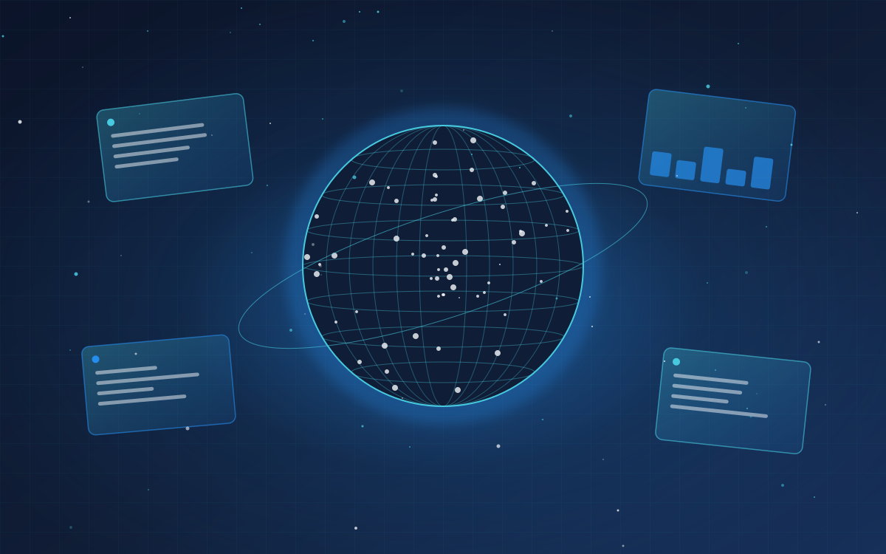

Digital Editorial × Artificial Intelligence
Reimagine
Reimagine
the way we
publish.
Khám phá cách trí tuệ nhân tạo đang tái định hình tương lai ngành xuất bản điện tử.
15+Bài viết biên tập
12Tài nguyên số
5Bước workflow AI
AI Research
Smart Publishing
Knowledge Graph
Featured Stories
Xem tất cảExplore Topics
AI Content Workflow
Từ ý tưởng đến xuất bản – với sự hỗ trợ của AI.
The Future of Publishing
Những xu hướng xuất bản tương lai
Từ nội dung tương tác, xuất bản cá nhân hóa đến trải nghiệm đọc giác quan – cùng khám phá những đổi thay đang định hình ngành xuất bản.
Xuất bản tương tác
Cá nhân hóa bằng AI
Sách đa phương tiện
